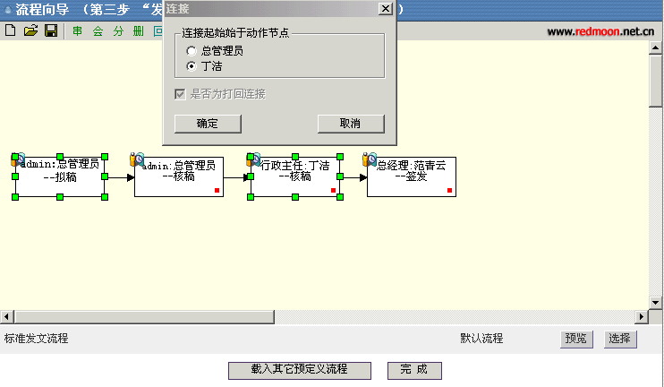

流程设计器使用方法
― 新建流程
― 打开本机保存的流程
― 将当前定义的流程保存
― 创建串签节点
― 创建会签节点
― 创建分支流程
― 删除节点
― 创建打回连接
― 编辑连接属性
― 编辑动作节点属性
― 编辑动作节点属性（保留按钮）
― 放大流程视图
― 缩小流程视图
― 显示/隐藏栅格
流程设计器示例（详细操作可查看预设流程定义）
“新建流程”按钮，然后点击 “动作节点属性”（或者双击结点）按钮进行动设定。然后根据需求选择串、会、分、删、回等操作。
步骤：首先选中节点然后点击 按钮,然后点击 （或者双击结点）按钮，进行流程动作设定，点击“确定”。
2.创建会签节点
首先选中节点然后点击 按钮,然后点击（或者双击动作结点）按钮，进行流程动作设定，点击“确定”。
3.创建分支节点

步骤：首先选中节点然后点击按钮,然后点击（或者双击结点）按钮，进行流程动作设定，点击“确定”。
4.创建异或发散
步骤：（1）点击，选中新建节点，然后点击（或者双击结点）按钮，进行流程动作设定。出现下图对话框，输入相关信息，最后选中标志位旁的“异或发散”选项。即可设定为异或发散节点。
（2）点击后，输入相应的动作属性。点击“确定”按钮。
4.创建打回效果图：

步骤：按Ctrl键连续选中两动作节点然后点击 按钮，选择“起始于动作结点”
5.取消打回效果图
步骤：选中动作结点间的连接虚线然后点击或者右击属性即可取消打回。

- 上行：上一节点至本节点为上行。（如第一副总经理至总经理）
- 下行：上一节点至本节点为下行。（总经理到第一副总经理，注：当下行处理角色时不能进行跨级处理如总经理至研发中心。）
- 平行（含本部门）：部门为平行级别的（如市场部、国际业务部、国内业务部、技术服务部为平行）
- 平行(含本部门，找不到则往上寻找) ： 部门为平行级别，若找不到则往上一级寻找（如市场部及平行部门→市场总监→第一副总经理室→总经理室）
- 本部门：自动寻找本部门的相关人员。
- Office审批颜色 ：用于审批后留下的批注颜色。（需安装签名批注插件）
- 动作标题：该动作相关动作标题。
- 角色与组织机构(行文方向)、职级、部门相关联：设为关联后，如果角色中存在有多个用户，系统将自动根据组织机构图就近匹配，采用这种方式时，流程中的处理人员不能处于多个部门中，只有当设为关联时，行文方向才有效。
- 可写表单域：选择该动作用户可填入的表单域。
- 策略：当满足条件的用户有多个时,按照所选取策略来指定用户。策略可分为：用户指定和最闲者优先。